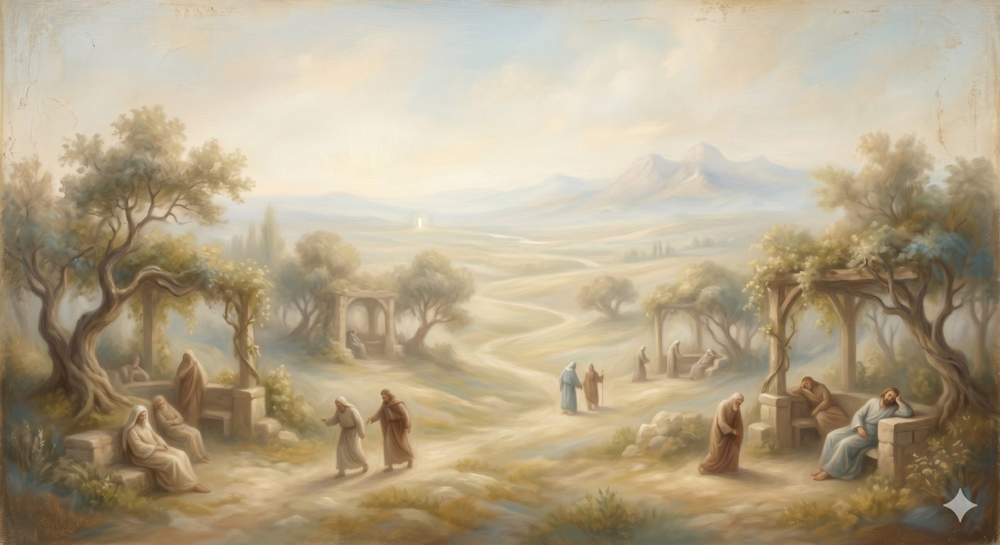

The Enchanted Ground
The pleasant, level stretch whose air invites sleep — spiritual drift, the cooling heart, and staying awake together.
"Therefore we must pay much closer attention to what we have heard, lest we drift away from it." Hebrews 2:1 (ESV)
The shepherds had warned them about it, and now the pilgrims reach it: the Enchanted Ground, a stretch of road whose very air makes travellers drowsy. There is nothing here to fight and nothing to fear. It is pleasant. The path is level. And that is precisely the danger, because Bunyan tells us that pilgrims who lie down to sleep on this ground often never wake again. Christian and Hopeful keep each other moving by falling into earnest conversation — talking, questioning, recounting how they came to the road at all — because good discourse is the one thing that keeps the eyes open here.
This is the most underestimated peril on the whole journey, and the one most likely to claim a seasoned pilgrim. The valleys and the dungeon are obvious dangers; you brace against them. The Enchanted Ground asks nothing of you at all. It simply invites you to coast — to let your affections cool by degrees, to stop paying attention, to drift off in the warm air. The threat here is not a dramatic fall. It is a quiet sleep.
Part OneThe drift no one decides on
The danger of this ground has a particular shape, and it is worth naming exactly, because almost everyone who walks with God for any length of time meets it. The writer of Hebrews chooses his word with care: we must pay much closer attention to what we have heard, lest we drift away from it. Not walk away. Drift.
Drift is passive. You do not drift by making a decision; you drift by failing to make one — by not paddling, by letting go, by allowing the current to do what currents do when you stop resisting them. The person who walks away from God in a single conscious act of rejection is someone you can see clearly. The person who drifts away over five years of busyness, mild discouragement, accumulated small compromises, and slowly cooling affections is much harder to spot — especially from the inside. They never chose to leave. They simply stopped steering, and the warm air did the rest. This is the Enchanted Ground's whole method: it does not turn you around. It just lulls you to sleep while you are still pointed in the right direction.
In plain terms
The biggest spiritual danger for most long-time believers isn't a dramatic crisis of faith. It's slow drift — the gradual cooling of affection, the quiet replacement of love with routine, the falling-asleep that no one ever actually decides to do.
You don't drift by choosing to. You drift by not paying attention. Which is why the remedy is so unglamorous: stay awake, stay honest, and don't walk this stretch alone.
Part TwoThe noonday demon
The ancient church had a name for the spiritual condition the Enchanted Ground produces: acedia. The desert fathers called it the noonday demon — not a dramatic temptation but a torpor, a listlessness, a spiritual boredom that drains the color out of everything and makes the soul too tired to care. It is not the same as depression, though it can feel adjacent to it; acedia is closer to a settled indifference, a shrug where there used to be longing. It is the deadly thing precisely because it does not feel deadly. It feels like nothing much at all.
And here the deepest pattern of the whole road returns one final time, because the answer to spiritual drowsiness is not, in the end, gritting your teeth and trying to feel more. A heart does not rekindle by being scolded. It rekindles the way it was always meant to — by turning back toward the One who is actually beautiful, by remembering what it first loved, by being re-awakened to a desire that mere willpower could never manufacture. The answer to a cooling heart is the same answer the City of Destruction gave to a captured one: not a better no to apathy, but a better yes to God. You stay awake on the Enchanted Ground the way the pilgrims did — by stirring the affections through honest talk, real remembering, and the company of others who are also fighting to keep their eyes open.
Part ThreeStaying awake together
It is no accident that Bunyan has the pilgrims survive this ground by talking — by good discourse, one keeping the other awake. The drowsiness is hardest to resist alone, because the drift is invisible from the inside; you need someone beside you who can see you nodding off and say so. This is what honest Christian friendship is for, and what the gatherings of the church are for at their best: not merely instruction, but the mutual stirring-up that keeps a community from falling asleep mid-journey. Let us consider how to stir one another up to love and good works, the same writer urges, not neglecting to meet together. The pilgrims who lie down alone on this ground are the ones who do not wake. The ones who keep walking are the ones who keep each other talking.
The Enchanted Ground does not turn you around. It lulls you to sleep while you are still facing the right way.
So the pilgrims press on through the heavy air, keeping each other awake with the story of how grace first found them — and as they walk, the ground begins, almost imperceptibly, to change. The air grows clearer and sweeter. Birdsong returns. They are leaving the Enchanted Ground behind, and crossing into a country so near the journey's end that the light from the City has begun to reach them.